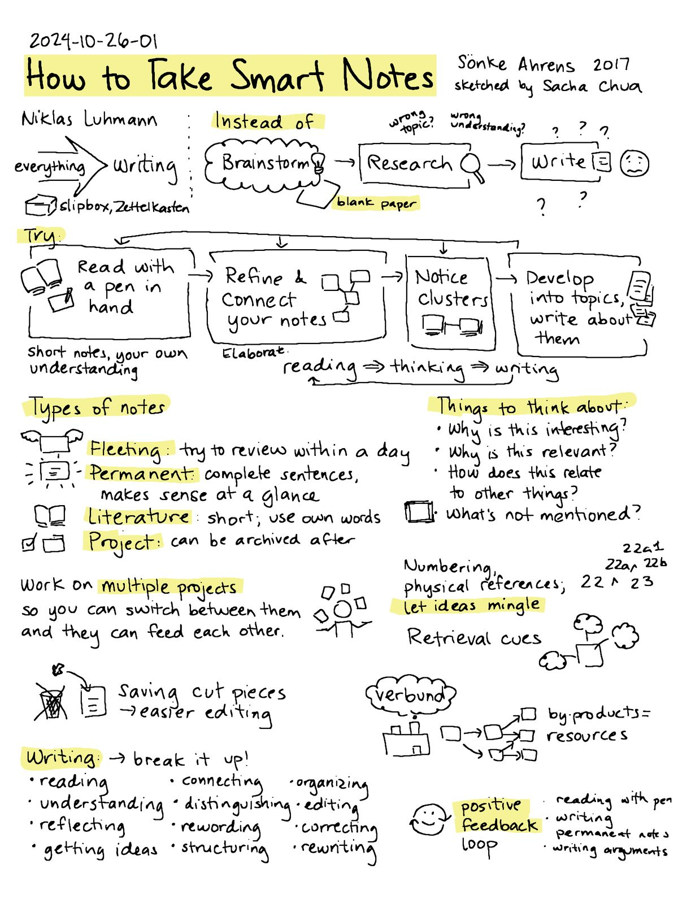

စာမလုပ်ဘဲ စာရနိုင်မယ့်နည်းလမ်းရှိလား?

စာလုပ်ရတာကို ကြိုက်လား?
တစ်နေကုန်မနားမနေ လုပ်ချင်လား?
စာလုပ်လို့ ပိုက်ဆံလည်းမရဘူး။
ဒီစာတွေက ကိုယ့်ကို ထမင်းပြန် မကျွေးဘူးဆိုရင်ရော?
အဲ့ဒီလိုဆိုရင်
၁၀၀မှာ ၈၀ကျော်လောက်က
စာဆက်လုပ်ဖြစ်တော့မယ်မထင်ဘူး။
ဘဝအတွက် လိုအပ်ချက်တစ်ခုအရသာ
ဘွဲ့တွေ၊ ဒီဂရီတွေလိုချင်လို့
ဒီပညာတွေနဲ့
“အသက်မွေးဝမ်းကြောင်း”ပြုဖို့
ပညာသင်နေကြရတဲ့သူတွေများမယ်။
အဲ့ဒီထဲမှာ ကျနော်လည်း ပါ(ခဲ့)တယ်
ဘဝမှာ စာတအားလုပ်ခဲ့ရတဲ့နှစ်က
ဆယ်တန်း (စနစ်ဟောင်း)တုန်းကပဲ။
မနက် ၂ နာရီထိ စာလုပ်ပြီး
မနက် ၆ နာရီဆို ပြန်ထရတယ်။
မလုပ်လို့မရဘူးလေ။
ဘဝကို အဆုံးအဖြတ်ပေးတာမို့
အရေးကြီးတာကိုး။
ပြီးတော့
ရယ်စရာကောင်းတာတစ်ခုရှိတယ်။
ကလေးတုန်းက
PS2 ဂိမ်းစက်ဝယ်ချင်လို့
ကျောင်းထူးချွန်ပြိုင်ပွဲဝင်ပြိုင်သေးတယ်။
အဲ့တုန်းက
ပြိုင်ပွဲတွေပြိုင်ပြီး ဆုတွေရပေမယ့်
သောင်းဂဏန်းဆိုတော့
ပိုက်ဆံပြည့်တော့မပြည့်ခဲ့ပါဘူးလေ။
ဘဝတစ်လျှောက်လုံး
သူများတွေထက်စာပိုလုပ်ရတဲ့ တစ်ခုတည်းသော
ရည်ရွယ်ချက်က
သူများတွေထက်ပိုနားချင်လို့၊
သက်တောင့်သက်သာ အလုပ်လုပ်ရချင်လို့။
ဒါပေမယ့် တစ်ခါတစ်လေတွေးမိတယ်။
စာမလုပ်ဘဲနဲ့ စာရနိုင်မယ့် နည်းလမ်းရှိလား?
မရှိဘူးဆိုရင်တောင်မှ
အချိန်ကုန်လူပင်ပန်းသက်သာစေမယ့်
နည်းလမ်းရှိလားပေါ့။
အဲ့ဒီလိုနဲ့ ကျနော် အင်တာနက်မှာ
ရှာကြည့်၊ စာအုပ်တွေရှာဖတ်၊
YouTube မှာ အချိန်ကုန်ဆုံးခဲ့တယ်။
အဲ့ဒီမှာ “meta learning” ကို သွားတွေ့မိတာပဲ
Meta Learning ဆိုတာဘာလဲ?
Meta Learning ကိုတိုတိုပြောရရင်တော့
စာဘယ်လိုလုပ်ရမလဲ ဆိုတာကို
လေ့လာသင်ယူခြင်းပေါ့။
ဒီမှာ —
(၁) စာလုပ်နည်းတွေ စာကျက်မှတ်နည်းတွေပါမယ်
(၂) ကိုယ့်ဦးနှောက်က ဘယ်လိုအလုပ်လုပ်သလဲ
(၃) သူများတွေနဲ့ ဘယ်လိုကွဲနေပြီး
ဘယ်လိုစနစ်တွေ သုံးရမလဲဆိုတာပါမယ်
(၄) ကိုယ့်ရဲ့ Mental စိတ်ပိုင်းဆိုင်ရာ / Physical ရုပ်ပိုင်းဆိုင်ရာ အခြေအနေတွေကို
နားလည်အောင်လုပ်တာပါမယ်
(၅) ဒီဟာတွေကို လက်တွေ့မှာ
ကိုယ်နဲ့ကိုက်ညီအောင်အသုံးချတာတွေပါမယ်
ဒါကို meta learning လို့ခေါ်ပါတယ်။

ဒါကို သိသွားတဲ့နောက် တကယ်ကို shock ဖြစ်သွားတယ်
ငါ ဒါကို လက်တွေ့အသုံးချလိုက်ရင်
ငါမလုပ်ချင်တဲ့
စာကို နည်းနည်းလုပ် များများရပြီး
အချိန်တွေ အများကြီးပိုထွက်လာမှာပဲလို့။
အဲ့ဒီလိုနဲ့ ဒီနေ့ ဒီအချိန်ထိ
ဒီစာလုပ်နည်း / စာမှတ်နည်းတွေကို
သုံးဖြစ်တယ်ပေါ့လေ။
ဒါတွေကြောင့်ပဲ
အချိန်တွေပိုထွက်လာပြီး
ကိုယ်စိတ်ဝင်စားတဲ့
Content Creation ပိုင်းတွေ၊
Marketing အပိုင်းတွေ၊
Entrepreneur အပိုင်းတွေမှာ
အချိန်ပိုပေးလာနိုင်တယ်။
ပိုထွက်လာတဲ့အချိန်မှာ
တခြားအရာတွေကို လေ့လာနိုင်တာကြောင့်
အခုဆိုရင် စာမလုပ်တဲ့အားလပ်ချိန်မှာ
အချိန်ပေးခဲ့တဲ့ side hustle တွေက
ကျနော့်ကို ငွေတွေအများကြီး
ပိုရှာပေးနေပြီ။
ဒီနည်းလမ်းတွေက ဘယ်သူတွေအတွက်လဲ?
- စာနည်းနည်းလေးပဲ လုပ်ပြီး စာအများကြီးရချင်တဲ့သူတွေ၊
- စာလုပ်ချိန်ကို နည်းနည်းပဲသုံးပြီး ဝါသနာပါရာဘက်မှာ အားစိုက်ချင်တဲ့သူတွေ၊
- ပြီးတော့ G12 တို့လို Career ကို အဆုံးအဖြတ်ပေးမယ့် စာမေးပွဲတွေမှာ
အမှတ်အများဆုံးယူချင်တဲ့ high school ကျောင်းသားတွေ၊
- University နှင့် တခြား field တွေ…
- လူတော်တော်များများအတွက် အထောက်အကူရမယ်ထင်ပါတယ်။
ဆိုတော့ ကျနော် ဒါလေးကို
Blog Post အနေနဲ့ ပုံမှန်လေး ဝေမျှ
သွားဖို့ရှိပါတယ်။
ဒါကတော့ Day 1 ပါ။
Day 2 မှာ ပြန်ဆုံကြမယ် ✌️
ဒါမျိုးထပ်ဖတ်ချင်သေးရင် ...
VPN ချိတ်ပြီး ကျနော့် FB page မှာလည်း ထပ်ဖတ်လို့ရပါတယ် 🥳
Haru
1% Better Every Day
💬 Comments
Anonymous comments allowed. Be kind. ❤️